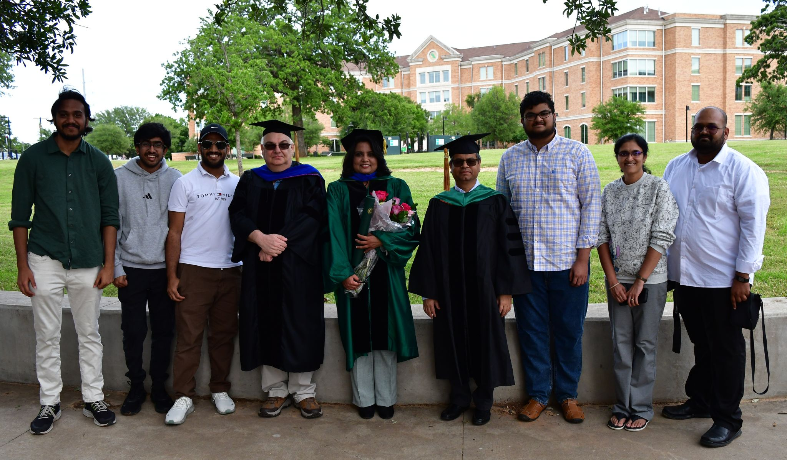

Members of SESL
|

SESL Members in 2025
|
 SESL Members in 2012
SESL Members in 2012
|
Faculty Members
|
|
Professor,
Department of Computer Science and Engineering |
Dr. Mohanty obtained Ph.D. in Computer
Science
and Engineering from the University of South Florida. His
research interests are the following:
-
Security and Energy Aware Cyber-Physical Systems (CPS)
-
IoT-based Approaches for Smart Healthcare and Smart Agriculture
-
IoT-enabled Consumer Electronics for Smart Cities and Smart Villages
|
|
|
Professor,
Department of Electrical Engineering |
Dr. Kougianos obtained Ph.D. in Electrical
Engineering from the Louisiana State University.
He has extensive industrial experience in semiconductor process
integration, process and device simulation, and VLSI design. His
current research interests include analog and mixed signal circuit
simulation and the application of stochastic techniques to the solution
of electromagnetic problems. |
Current Graduate Student Members:
-
V. K. V. V. Bathalapalli, Ph.D.(Computer Science and Engineering), Research: "Hardware-Assisted Sustainable Cybersecurity for Smart Healthcare and Agriculture", Department of Computer Science and Engineering, University of North Texas, since Spring 2021.
- K. K. Kethineni, Ph.D.(Computer Science and Engineering), Research: "AI for Smart Agriculture", Department of Computer Science and Engineering, University of North Texas, since Spring 2022.
-
M. Shamsa, Ph.D.(Computer Science and Engineering), Research: "Smart Healthcare", Department of Computer Science and Engineering, University of North Texas, since Fall 2021.
- I. D. Siripurapu, Ph.D.(Computer Science and Engineering), Research: "Smart Healthcare", Department of Computer Science and Engineering, University of North Texas, since Fall 2023.
-
A. Alkinani, Ph.D.(Computer Science and Engineering), Research: "Edge-AI for Smart Agriculture", Department of Computer Science and Engineering, University of North Texas, since Spring 2024.
-
S. M. Mudavat, Ph.D.(Computer Science and Engineering), Research: "Smart Agriculture", Department of Computer Science and Engineering, University of North Texas, since Fall 2024.
-
S. S. H. Chakravarthula, Ph.D.(Computer Science and Engineering), Research: "Deepfake Detection", Department of Computer Science and Engineering, University of North Texas, since Fall 2024.
-
A. A. Kapatrala, Ph.D.(Computer Science and Engineering), Research: "Quantum Distributed Ledger", Department of Computer Science and Engineering, University of North Texas, since Spring 2025.
-
S. Pisupati, Ph.D.(Computer Science and Engineering), Research: "Smart Energy Cybersecurity", Department of Computer Science and Engineering, University of North Texas, since Spring 2025.
-
J. Amathi, Ph.D.(Computer Science and Engineering), Research: "Quantum Machine Learning", Department of Computer Science and Engineering, University of North Texas, since Fall 2025.
-
S. R. Perala, M.S.(Computer Engineering), Research: "Quantum Machine Learning", Department of Computer Science and Engineering, University of North Texas, since Spring 2025.
Past Ph.D. Student Members:
-
M. Alruwaill, Ph.D.(Computer Science and Engineering), Dissertation: "hChain: Scalable Distributed Ledger Paradigms for Secure IoT-Driven Data Management in Smart Cities", Department of Computer Science and Engineering, University of North Texas, Summer 2025. (First Employment: Jouf University, Saudi Arabia)
- S. Aarella, Ph.D.(Computer Science and Engineering), Dissertation: "Fortified-Edge: PUF-based Security-by-Design for Integrated Cybersecurity in Collaborative Edge Computing", Department of Computer Science and Engineering, University of North Texas, Spring 2025. (First Employment: Austin College)
- A. K. Bapatla, Ph.D.(Computer Science and Engineering), Dissertation: "PharmaChain: Distributed Ledger based Robust Solutions for Counterfeit-Free Pharmaceutical Supply Chain", Department of Computer Science and Engineering, University of North Texas, Summer 2024. (Received Best Paper Award at the 20th OITS International Conference on Information Technology (OCIT) 2022.) (Received Second Prize at the IEEE Brain Data Bank Challenge 2020.) (First Employment: University of Central Missouri)
- L. S. T. Vangipuram, Ph.D.(Computer Science and Engineering), Dissertation: "AgroString: Exploring Distributed Ledger for Effective Data Management in Smart Agriculture", Department of Computer Science and Engineering, University of North Texas, Summer 2024. (Received Best Paper Award at the 21st OITS International Conference on Information Technology (OCIT) 2023.) (Received Best Research Demo Session Paper Award at the 9th IEEE International Symposium on Smart Electronic Systems (IEEE-iSES) 2023.) (Received IEEE ICC 2022 NSF Student Conference Grant Award.) (First Employment: Texas A&M University -- Texarkana)
- A. Alkhodair, Ph.D.(Computer Science and Engineering), Dissertation: "Scalable Next Generation Blockchains For Large Scale Complex Cyber Physical Systems in Smart Cities", Department of Computer Science and Engineering, University of North Texas, Summer 2023. (First Employment: University of Tabuk, Saudi Arabia)
- A. Mitra, Ph.D.(Computer Science and Engineering), Dissertation: "Machine Learning Methods for Data Quality Aspects in Edge Computing Platforms", Department of Computer Science and Engineering, University of North Texas, Fall 2022. (Received Outstanding Ph.D. Student in Computer Science and Engineering Award for the Year 2022.) (Received IEEE INFOCOM 2022 Student Conference Grant Award.) (Received IEEE ICC 2022 NSF Student Conference Grant Award.) (Received Best Paper Award at the 19th OITS International Conference on Information Technology (OCIT) 2021.) (First Employment: University of Nebraska-Lincoln)
- L. Rachakonda, Ph.D.(Computer Science and Engineering), Dissertation: "IoMT-based Accurate Stress Monitoring for Smart Healthcare", Department of Computer Science and Engineering, University of North Texas, Spring 2021. (Received Second Prize at the IEEE Brain Data Bank Challenge 2020.) (Received Best Paper Award at the 5th IEEE International Symposium on Smart Electronic Systems (iSES) 2019.) (Received Best Poster Award, Second place with a cash prize of $500, at the 30th IEEE MetroCon Conference 2017.) (First Employment: University of North Carolina at Wilmington)
- I. "Tunde" Olokodana, Ph.D.(Computer Science and Engineering), Dissertation: "Kriging Methods to Exploit Spatial Correlations of EEG Signals for Fast and Accurate Seizure Detection in the IoMT", Department of Computer Science and Engineering, University of North Texas, Summer 2020. (Received Second Prize at the IEEE Brain Data Bank Challenges and Competitions 2018.) (Received Best Poster Award, Second place with a cash prize of $500, at the 31st IEEE MetroCon Conference 2018.) (First Employment: IBM Corporation)
- M. A. Sayeed, Ph.D.(Computer Science and Engineering), Dissertation: "Epileptic Seizure Detection and Control in The Internet of Medical Things (IoMT) Framework", Department of Computer Science and Engineering, University of North Texas, Spring 2020. (Received Best Poster Award, First place with a cash prize of $1000, at the 30th IEEE MetroCon Conference 2018.) (First Employment: Eastern New Mexico University)
- V. P. Yanambaka, Ph.D.(Computer Science and Engineering), Dissertation: "Exploring Physical Unclonable Functions for Hardware-Assisted Efficient Security in the IoT", Department of Computer Science and Engineering, University of North Texas, Spring 2019. (Received Best Poster Award, First place with a cash prize of $1000, at the 30th IEEE MetroCon Conference 2017.) (First Employment: Central Michigan University)
- P. Sundaravadivel, Ph.D.(Computer Science and Engineering), Dissertation: "Application-Specific Things Architectures for IoT-based Smart Healthcare", Department of Computer Science and Engineering, University of North Texas, Spring 2018. (Received Best Poster Award, Second place with a cash prize of $500, at the 30th IEEE MetroCon Conference 2017.) (First Employment: University of Texas at Tyler)
- U. Albalawi, Ph.D.(Computer Science and Engineering), Dissertation: "New Frameworks for Secure Image Communication in the Internet of Things (IoT)", Department of Computer Science and Engineering, University of North Texas, Summer 2016. (First Employment: University of Tabuk, Saudi Arabia)
- S. Joshi, Ph.D.(Computer Science and Engineering), Dissertation: "Analysis and Optimization of Graphene FET Based Integrated Circuits", Department of Computer Science and Engineering, University of North Texas, Spring 2016. (First Employment: Oklahoma State University)
-
O. Okobiah, Ph.D.(Computer Science and Engineering), Dissertation: "Geostatistical Inspired Metamodeling and Optimization of Nanoscale Analog Circuits", University of North Texas, Spring 2014. (Received Outstanding Ph.D. Student in Computer Science and Engineering Award for the Year 2013-2014.) (Received scholarship for ACM A. M. Turing Centenary Celebration 2012.) (Received Scholarship for ACM SIGDA Design Automation Summer School 2011). (First Employment: Samsung Semiconductor)
-
G. Zheng, Ph.D.(Computer Science and Engineering), Dissertation: "Layout-Accurate Ultra-Fast System Level Design Exploration Through Verilog-AMS", Department of Computer Science and Engineering, University of North Texas, Spring 2013. (Received Outstanding Ph.D. Student in Computer Science and EngineeringAward for the Year 2012-2013.) (Received scholarship for ACM A.M. Turing Centenary Celebration 2012.) (Received Scholarship for ACM SIGDA Design Automation Summer School 2011.) (First Employment: Analog Devices, Inc.)
-
O. Garitselov, Ph.D.(Computer Science and Engineering), Dissertation: "Metamodeling-Based Fast Optimization of Nanoscale AMS-SoCs", Department of Computer Science and Engineering, University of North Texas, since Spring 2010. (Received Outstanding Ph.D. Student in Computer Science and Engineering Award for the Year 2011-2012.) (Received Scholarship for ACM SIGDA Design Automation Summer School 2011.) (First Employment: Spectracom Corporation)
-
G. Thakral-Ghai, Ph.D.(Computer Science and Engineering), Dissertation: "Process-Voltage-Temperature Aware Nanoscale Circuit Optimization", Department of Computer Science and Engineering, University of North Texas, Fall 2010. (First UNT Woman Computer Science and Engineering Ph.D. with VLSI Specialization.) (Current Position: Professor and Dean (Academics), Oriental University, Indore, India.)
-
D. V. Ghai, Ph.D.(Computer Science and Engineering), Dissertation: "Variability Aware Low-Power Techniques for Nanoscale Mixed-Signal
Circuits", Department of Computer Science and Engineering, University of North Texas, Spring 2009. (First UNT Computer Science and Engineering Ph.D. with VLSI Specialization.) (Received 2019 UNT CSE Recent Alumni Award.) (Current Position: Pro-Vice Chancellor and Professor of Electronics and Communication, Oriental University, Indore, India.)
Past M.S. Thesis Student Members :
-
F. Alamri, M.S.(Computer Engineering), Thesis: "InoculLedger: Distributed Ledger based Secure and Scalable Solution for Efficient Vaccine Supply Chain Management", Department of Computer Science and Engineering, University of North Texas (UNT), Fall 2024. (First Employment: Joined Ph.D. Program.)
-
C. Dockendorf, M.S.(Computer Engineering), Research: "Lite-Agro: Integrating Federated Learning and TinyML on IoAT-Edge for Plant Disease Classification", Department of Computer Science and Engineering, University of North Texas, Spring 2024. (Received Best Research Demo Session Paper Award at the IFIP-IoT 2023.) (First Employment: Lockheed Martin.)
-
A. Alkinani, M.S.(Computer Engineering), Thesis: "FruitPAL: An IoT-Enabled Framework for Automatic Monitoring of Fruit Consumption in Smart Healthcare", Department of Computer Science and Engineering, University of North Texas (UNT), Fall 2023. (First Employment: Joined Ph.D. Program.)
- V. Dhayal, M.S.(Computer Science), Thesis: "Exploring Simscape™ Modeling for Piezoelectric Sensor Based Energy Harvester", Department of Computer Science and Engineering, University of North Texas, Spring 2017. (First Employment: North Carolina State University.)
- N. Mukka, M.S.(Computer Engineering), Thesis: "Simulink® Based Modeling of A Multi Global Navigation Satellite System", Department of Computer Science and Engineering, University of North Texas, Summer 2016. (Received Outstanding Master's Student in Computer Engineering Award for Year 2015-2016.) (First Employment: Sirius XM Radio Inc.)
- G. Aluru, M.S.(Computer Engineering), Thesis: "Exploring Analog and Digital Design Using Open-Source Electric VLSI Design System", Department of Computer Science and Engineering, University of North Texas, Spring 2016.
- M. K. Mukka, M.S.(Computer Engineering), Thesis: "Simulink based Design and Implementation of a Solar Power based Mobile Charger", Department of Computer Science and Engineering, University of North Texas, Fall 2015. (First Employment: Zoro, Inc.)
- P. Lrmadhu, M.S.(Electrical Engineering Technology), Thesis: "Comparative Analysis and Implementation of High Data Rate Wireless Sensor Network Simulation Frameworks", Department of Engineering Technology, University of North Texas, Fall 2015.
-
A. Hanson, M.S.(Computer Science), Thesis: "General Purpose Computing in GPU - A Watermarking Case Study", Department of Computer Science and Engineering, University of North Texas, Summer 2014. (First Employment: AGS Consultants, LLC)
-
M. Gautam, M.S.(Computer Engineering), Thesis: "Exploring Memristor Based Analog Design in Simscape", Department of Computer Science and Engineering, University of North Texas, Spring 2013.
- J. Franco, M.S.(Computer Engineering) Thesis: "Rapid Prototyping and Design of a Fast Random Number Generator", Department of Computer Science and Engineering, University of North Texas, Spring 2012. (First Employment: Raytheon Company.)
-
G. Coelho, M.S.(Engineering Systems), Thesis: "OTA-Quadrotor: An Object-Tracking Quadrotor for Real-Time Detection and Recognition", Department of Engineering Technology, University of North Texas, Spring 2012. (First Employment: Peterbilt Motors Company.)
- O. Okobiah, M.S.(Computer Engineering), Thesis: "Exploring Process-Variation Tolerant Design of Nanoscale Sense Amplifier Circuits", Department of Computer Science and Engineering, University of North Texas, Fall 2010. (Received Outstanding Master's Student in Computer Engineering Award for Year 2010-2011.) (First Employment: Joined Ph.D. Program.)
-
I. Zarate, M.S.(Engineering Systems), Thesis: "Software and Hardware in the Loop Modeling of an Audio Watermarking Algorithm", Department of Engineering Technology, University of North Texas, Fall 2010. (First Employment: Weatherford Inc., Houston, TX.)
-
R. Rastogi Bani, M.S.(Computer Engineering), Thesis: "A New N-Way Reconfigurable Data Cache Architecture for Embedded Systems", Department of Computer Science and Engineering, University of North Texas, Fall 2009. (Received Outstanding Master's Student in Computer Engineering Award for Year 2009-2010.) (Received International Education Committee ScholarshipAward for Year 2009-2010.) (First Employment: Center for Development of Advanced Computing (CDAC), Pune, India.)
-
S. Rangoonwala, M.S.(Engineering Systems), Thesis: "A Verilog 8051 Softcore for FPGA Applications", Department of Engineering Technology, University of North Texas, Spring 2009.
-
S. Naraharisetti, M.S.(Computer Engineering), Thesis: "Region Aware DCT Domain Invisible Robust Blind Watermarking for Color Images", Department of Computer Science and Engineering, University of North Texas, Fall 2008. (Received Outstanding Master's Student in Computer Engineering Award for Year 2008-2009.) (First Employment: Emvia.)
-
A. Mendoza, M.S.(Engineering Systems), Thesis: "Hardware Software Co-Design of a JPEG2000 Watermarking Encoder", Department of Engineering Technology, University of North Texas, Fall 2008. (First Employment: Olympus Controls.)
- S. Tarigopula, M.S.(Computer Engineering), Thesis: "A CAM based High-Performance Classifier-Scheduler for a Video Network Processor", Department of Computer Science and Engineering, University of North Texas, Spring 2008. (Received Outstanding Master's Student in Computer Engineering Award for Year 2007-2008.) (First Employment: GE.)
-
N. Pati, M.S.(Computer Engineering), Thesis: "Occlusion Tolerant Object Recognition Methods for Video Surveillance and Tracking of Moving Civilian Vehicles", Department of Computer Science and Engineering, University of North Texas, Fall 2007. (First Employment: FedEx.)
-
S. T. Vadlamudi, M.S.(Computer Engineering), Thesis: "A Nano-CMOS Based Universal Voltage Level Converter for Multi-VDD SoCs", Department of Computer Science and Engineering, University of North Texas, Spring 2007.
-
A. Palakodety, M.S.(Computer Engineering), Thesis: "CMOS Active Pixel Sensors for Digital Cameras: Current State-of-the-Art", Department of Computer Science and Engineering, University of North Texas, Spring 2007. (First Employment: Vertex Pharmaceuticals.)
-
W. Cai, M.S.(Electronics Engineering Technology), Thesis: "FPGA Prototyping of a Watermarking Algorithm for MPEG-4", Department of Engineering Technology, University of North Texas, Spring 2007. (First Employment: Microsoft Corporation.)
-
G. Sarivisetti, M.S.(Computer Engineering), Thesis: "Design and Optimization of Components in a 45nm CMOS Phase Locked Loop", Department of Computer Science and Engineering, University of North Texas, Fall 2006. (First UNT Woman Computer Engineering Graduate with VLSI Specialization.) (Current Employment: Walt Disney World.)
-
A. K. Ale, M.S.(Computer Engineering), Thesis: "Comparison and Evaluation of Existing Analog Circuit Simulators Through a Sigma-Delta Modulator", Department of Computer Science and Engineering, University of North Texas, Fall 2006. (First Employment: Texas Medical Center.)
-
O. B. Adamo, M.S.(Computer Engineering), Thesis: "VLSI Architecture and FPGA Prototyping of a Secure Digital Camera for Biometric Application", Department of Computer Science and Engineering, University of North Texas, Summer 2006. (Third UNT Computer Engineering Graduate with VLSI Specialization.) (First Employment: Joined Ph.D. Program.)
-
R. Velagapudi, M.S.(Computer Engineering), Thesis: "Modeling and Reduction of Gate Leakage during Behavioral Synthesis of NanoCMOS Datapath Circuits", Department of Computer Science and Engineering, University of North Texas, Spring 2006. (Second UNT Computer Engineering Graduate with VLSI Specialization.)
-
V. Mukherjee, M.S.(Computer Engineering), Thesis: "A Dual Dielectric Approach for Performance Aware Reduction of Gate Leakage in Combinational Circuits", Department of Computer Science and Engineering, University of North Texas, Spring 2006. (First UNT Computer Engineering Graduate with VLSI Specialization.) (Received 2019 UNT CSE Recent Alumni Award.) (First Employment: Amdocs Inc.)
Current/Past Visting Scholars:
-
C. Sahu, Visiting Scholar, Malaviya National Institute of Technology Jaipur, India, Fall 2022 -- Spring 2023.
-
J. Singh, Visiting Scholar, PDPM-Indian Institute of Information Technology Design and Manufacturing, Jabalpur, India, Fall 2016.
-
P. Ghosal, UGC Raman Post Doctoral Fellow, Indian Institute of Engineering Science and Technology, Shibpur, India, Summer 2013 -- Summer 2014.
-
Y. -T. Pai, Visiting Ph.D. student from Department of Electronic Engineering, National Taiwan University of Science and Technology, Taiwan, R.O.C, Fall 2008 -- Spring 2009.
-
C. -H. Lee, Visiting M.S. student from Department of Electronic Engineering, National Taiwan University of Science and Technology, Taiwan, R.O.C, Spring 2009.
-
L. -T. Lee, Visiting M.S. student from Department of Electronic Engineering, National Taiwan University of Science and Technology, Taiwan, R.O.C, Fall 2008.
-
S. -S. Chen, Visiting M.S. student from Department of Electronic Engineering, National Taiwan University of Science and Technology, Taiwan, R.O.C, Fall 2008.
-
J. -C. Hsu, Visiting M.S. student from Department of Electronic Engineering, National Taiwan University of Science and Technology, Taiwan, R.O.C, Fall 2008.
Current/Past Undergraduate Student Members:
-
A. Mazumder, Texas Academy of Math and Science (TAMS), Spring 2024 -- Fall 2025. (Received Barry M. Goldwater Scholarship in 2025.) (Inducted into the National Gallery for America's Young Inventors for 2025.) (Top 300 Finalists for the Regeneron Science Talent Search in 2025 to Receive a Cash Prize of $2,000.) (Received Best Undergraduate Poster Award at the IEEE MetroCon Conference 2024.) (Received Undergraduate Research Fellowship (URF) for the Year 2024-2025.)
-
A. Kumar, Texas Academy of Math and Science (TAMS), Fall 2023 -- Fall 2025. (Received Undergraduate Research Fellowship (URF) for the Year 2024-2025.).
-
V. Gollapalli, Texas Academy of Math and Science (TAMS), Fall 2024 -- Spring 2025.
-
A. Kanakamedala, Texas Academy of Math and Science (TAMS), Fall 2024 -- Spring 2025.
-
N. Subhash, Texas Academy of Math and Science (TAMS), Fall 2024 -- Spring 2025.
-
S. Jasti, Texas Academy of Math and Science (TAMS), Fall 2024 -- Spring 2025.
-
S. Narra, Texas Academy of Math and Science (TAMS), Fall 2024 -- Spring 2025.
-
P. Jampana, Marcus High School, Spring 2024 -- Spring 2025.
-
M. Narra, Issaquah High School, Spring 2024 -- Spring 2025.
-
G. Praveen, B.E. (Computer Science), M. S. Ramaiah Institute of Technology (MSRIT), India, Fall 2024.
-
S. Agarwal, Texas Academy of Math and Science (TAMS), Summer 2024 -- Fall 2024.
-
A. Mungale, Texas Academy of Math and Science (TAMS), Spring 2024 -- Fall 2024.
-
S. Sattiraju, Texas Academy of Math and Science (TAMS), Summer 2024 -- Fall 2024.
-
A. Thebe, B.S. (Cybersecurity), University of North Texas, Summer 2024 -- Fall 2024.
-
D. Raajeev, Round Rock High School, Spring 2024 -- Fall 2024.
-
A. Lella, Texas Academy of Math and Science (TAMS), Spring 2024 -- Fall 2024.
-
S. Shah, B. Tech. (Electronics and Instrumentation), Nirma University, Summer 2024.
-
S. Rout, B. Tech. (Computer Science), Indian Institute of Technology Madras (IITM), Fall 2023 -- Spring 2024. (Selected to JP Morgan Chase & Co. Quantitative Mentorship Program.) (Received Texas Instrument Embedded Software WiSH Scholarship.) (Received Bain & Company True North Scholarship.)
-
S. S. Panigrahi, B. Tech. (Information Technology), Rajiv Gandhi Institute of Petroleum Technology (RGIPT), Fall 2023 -- Spring 2024.
-
P. Mittal, B. Tech. (Computer Science), Kalinga Institute of Industrial Technology (KIIT), Spring 2023 -- Spring 2024.
-
A. Gupta, Texas Academy of Math and Science (TAMS), Spring 2023 -- Spring 2024.
-
R. Rajan, Texas Academy of Math and Science (TAMS), Fall 2022 -- Spring 2024.
-
S. Goel, Texas Academy of Math and Science (TAMS), Fall 2022 -- Spring 2023. (Received Barry M. Goldwater Scholarship in 2024.) (Top 40 Finalists for the Regeneron Science Talent Search in 2024 to Receive a Cash Prize of $25,000.)
-
M. Huang, Texas Academy of Math and Science (TAMS), Spring 2022 -- Summer 2022.
-
J. Toney, B.S. (Computer Engineering), University of North Texas, Spring 2022.
-
A. Singhal, Texas Academy of Math and Science (TAMS), Fall 2021.
-
N. Madireddi, Texas Academy of Math and Science (TAMS), Summer 2020 -- Summer 2020.
-
P. Rajkumar, Texas Academy of Math and Science (TAMS), Fall 2019 -- Fall 2019.
-
B. Hart, B.S. (Computer Engineering), University of North Texas, Fall 2019 -- Fall 2019.
-
J. Choi, Texas Academy of Math and Science (TAMS), Fall 2019 -- Fall 2019.
-
A. Sharma, Texas Academy of Math and Science (TAMS), Spring 2019 -- Fall 2019.
-
A. Kothari, Texas Academy of Math and Science (TAMS), Fall 2017 - Spring 2019.
-
E. Zhou, Texas Academy of Math and Science (TAMS), Spring 2018 - Summer 2018.
-
I. Lee, Texas Academy of Math and Science (TAMS), Spring 2017.
-
M. Behnia, Texas Academy of Math and Science (TAMS), Spring 2014 -- Summer 2014.
-
J. E. Barcenas, B.S.(Computer Engineering), University of North Texas, Fall 2013 -- Spring 2014.
-
R. A. Cerrato, B.S.(Computer Engineering), University of North Texas, Spring 2014.
-
T. Ali, B.S.(Computer Engineering), University of North Texas, Spring 2013.
-
T. T. Jost, B.S.(Pre Engineering), University of North Texas, Fall 2012 -- Spring 2013.
-
R. Patel, B.S.(Computer Engineering), University of North Texas, Spring 2011.
-
J. Judge, Texas Academy of Math and Science (TAMS), Fall 2010.
|
|
Last updated on 23 May 2025 (Fri).
{kind=link}
{kind=link}
{kind=link}
{kind=link}
{kind=link}
{kind=link}
{kind=link}
{kind=link}
{kind=link}
{kind=link}
{kind=link}
{kind=link}
{kind=link}